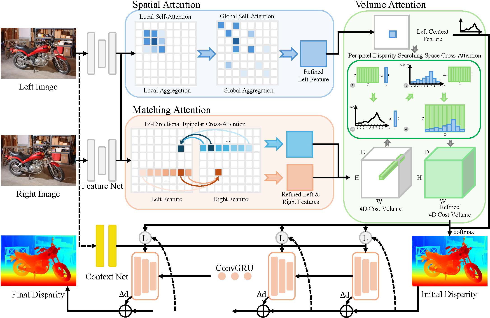
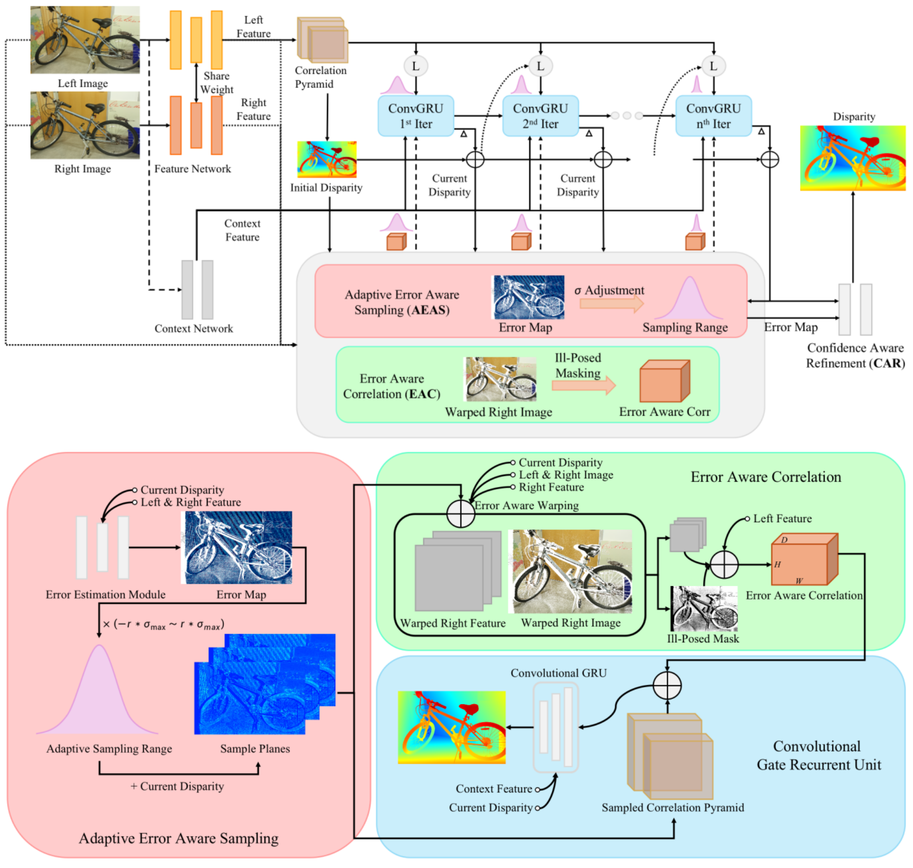
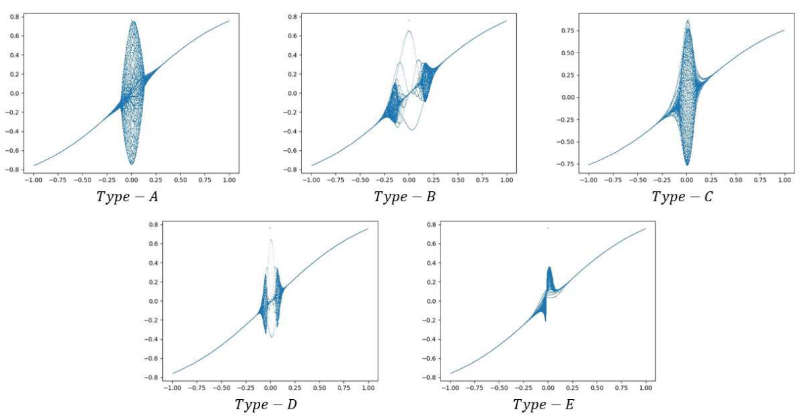

Jiahao LI (Jarvis Lee) | 李嘉昊Ph.D. StudentCity University of Hong Kong (CityUHK) |
About Me
I am currently a first-year Ph.D. Student at City University of Hong Kong (CityUHK), supervised by Prof. Jianping Wang. My current research direction is Autonomous Driving, especially 3D Occupancy Prediction, 3D Scene Reconstruction (Depth Estimation & Stereo Matching).
Prior to that, I obtained the Master's Degree of Science in Computer Science from The Chinese University of Hong Kong (CUHK) in 2022, supervised by Prof. Kin Hong Wong and the Bachelor's Degree of Science (Honours) in Computer Science and Technology (First Class) from Hong Kong Baptist University (HKBU) in 2021, supervised by Prof. Zhiyuan LI and Prof. Raymond Lee. After graduating from CUHK, I also spent a wonderful time from 2022 to 2024, working at the PICO MR Team of ByteDance Ltd. as a Computer Vision Algorithm Engineer focused on Depth Estimation and 3D Reconstruction, mentored by Xiao Liu.
News
- [2025/06] 🚀🚀🚀 One paper is accepted by ICCV 2025! 🚀🚀🚀
- [2024/08] 🎉🎉🎉 I obtained the Ph.D. offer at CityUHK and started my Ph.D. studies! 🎉🎉🎉
- [2024/05] 🔥🔥🔥 Our team (FSM Speed) has won the Championship at the 17th F1TENTH Autonomous Grand Prix during the CPS-IoT Week 2024 in Hong Kong, supervised by Prof. Jianping Wang. The team members include Ph.D. students Jinghuai Deng, Bingyuan Huang, Xiaoyun Dong, Hua Hu, and Jiahao LI. 🔥🔥🔥
Publications
|

|
Global Regulation and Excitation via Attention Tuning for Stereo Matching Jiahao LI, Xinhong Chen, Zhengmin JIANG, Qian Zhou, Yung-Hui Li, Jianping Wang ICCV 2025 Paper / Code A universal framework (GREAT) that can be integrated into existing iterative stereo-matching methods to improve the performance in ill-posed regions by using three well-designed attention mechanisms (Spatial Attention, Matching Attention, and Volume Attention) to incorporate global geometric information. |
Previous Publications
|

|
Adaptive Error Aware Cost Volume for Stereo Matching Jiahao LI, Zhengxin Li, Yiping Bao, Guangyuan Zhou, Qiang Rao, Xiao Liu ECCV 2024 Submission ID 4123 Code We present a dynamic sampling strategy based on an error map, significantly accelerating iterative speed and a cost volume construction method that effectively filters out noise from ill-posed regions, enhancing the accuracy of disparity prediction. Warning: This paper has not been accepted by the main conference of ECCV 2024. Due to company policy, it has not been republished in any other conferences or workshops, nor has it been published on arXiv. If you have any problems, feel free to contact me by email. |
|

|
Chaotic Bi-LSTM and Attention HLCO Predictor Based Quantum Price Level Fuzzy Logic Trading System Jiahao LI, Zihao Huang, Lirong Lin, Yuchen Guo, Raymond Lee Soft Computing 2023 Paper / Code We propose a novel neural network guided price predictor with Attention Mechanism, Bidirectional LSTM, Chaotic Neuro-Oscillator, and Quantum Price Level to predict future High, Low, Close, and Open (HLCO) prices, and a novel fuzzy logic-based trading strategy combined with the above price predictor to remedy fixed order-triggering boundaries and the dilemma of traditional finance indicators. |
Projects

|
The 17th F1TENTH Grand Prix (HongKong)
Jinghuai Deng, Bingyuan Huang, Xiaoyun Dong, Hua Hu, Jiahao LI, and Jianping Wang CPS-IoT Week 2024 Project Page Supervised by Prof. Jianping Wang, our team (FSM Speed) won the championship at the 17th F1TENTH Autonomous Grand Prix during the CPS-IoT Week 2024 in Hong Kong. |